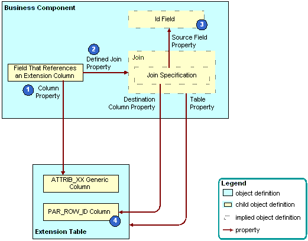

An Explicit Join Creates a Relationship Between an Extension Table and a Business Component
An explicit join is a join that is different from an implicit join in the following ways:
In the Siebel client, the user cannot typically edit a field that references a column from a joined table. You typically use this field only to display information.
You do not create an implicit join. With an implicit join, the column in the extension table is available for you to use.
You use Siebel Tools to explicitly create the join for other tables. For more information, see About Joins.
How Siebel CRM Creates an Explicit Join
The following figure describes how Siebel CRM creates an explicit join.
Explanation of Callouts
Siebel CRM uses the following objects and properties to create an explicit join:
Column property. Identifies the table column.
Defined join property. If the Join property is not empty, then the Join property identifies the join that supplies data from an extension table or other joined table.
Id field. A system field in the business component. It represents the ROW_ID column in the base table. You can use it in a join that involves an extension table and other joined tables. For more information, see System Fields of a Business Component.
PAR_ROW_ID (parent row ID) column. A column that is a foreign key to the base table that the extension table extends. Every extension table includes a column for parent row ID. Every row in an extension table contains a value in the PAR_ROW_ID column.
For more information, see Options to Use a Predefined One-to-One Extension Table.